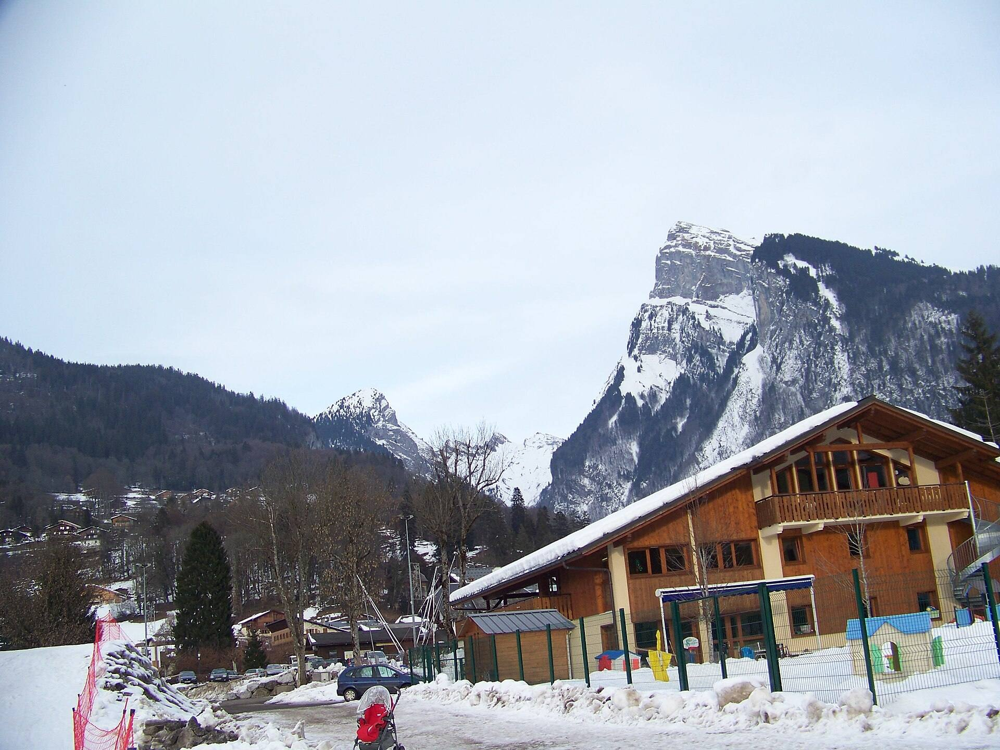
Accueil · Samoëns
Un village classé, un domaine à perte de vue
Entre Chamonix et Genève, au pied du Domaine du Grand Massif : comment venir et pourquoi Samoëns.
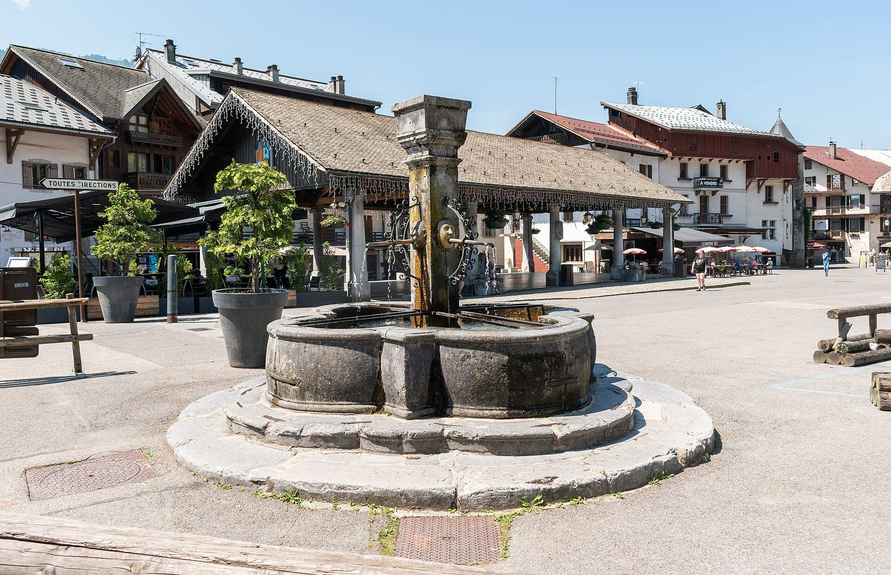
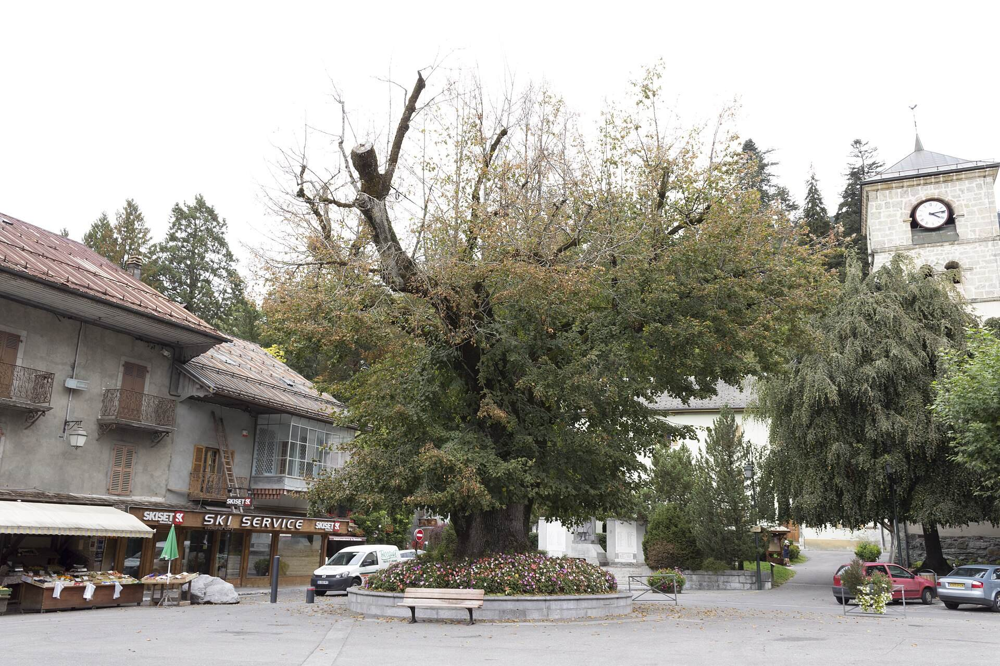
Le charme opère dès l’arrivée
À Samoëns (prononcer « Samoin »), tout respire l’authenticité : son célèbre Gros Tilleul vous toise du haut de ses 580 ans. Ses demeures en pierre taillée rappellent que le village est classé aux Monuments historiques.
On y déambule volontiers, pourquoi pas en calèche à la faveur des premiers flocons, à la recherche d’une bonne table ou de produits du terroir, loin des ambiances nocturnes survoltées. Station-village, Samoëns propose tous les commerces, locations, artisans et navettes dont vous pourriez avoir besoin.
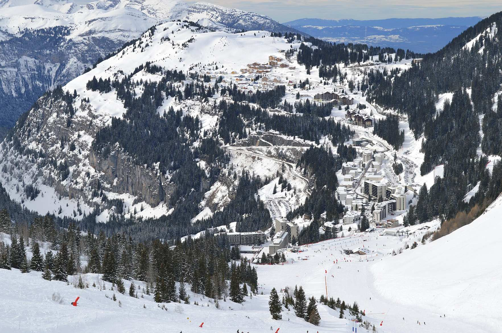
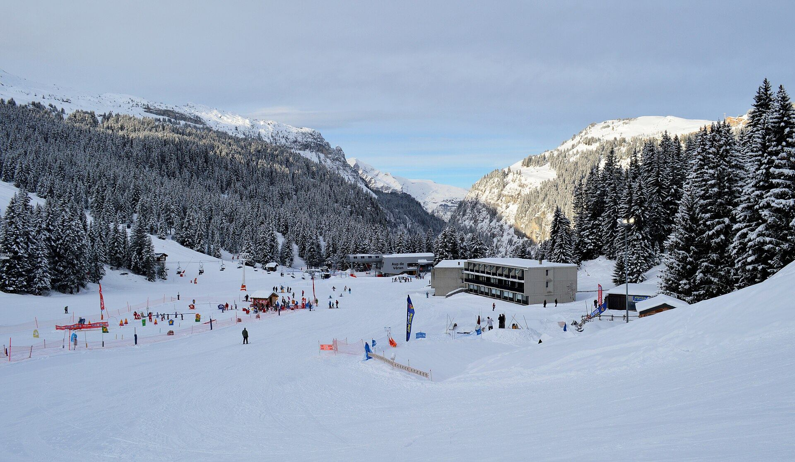
Le Domaine du Grand Massif
Samoëns fait partie, avec Flaine, Les Carroz, Morillon et Sixt, des cinq stations qui composent l’un des plus grands espaces aménagés des Alpes françaises, face au massif du Mont-Blanc. Berceau des sports d’hiver, le premier téléski y a été installé dès 1939.
148 pistes pour tous les styles et tous les niveaux, du débutant au skieur expérimenté, avec des offres pensées pour le ski en famille et une neige abondante.
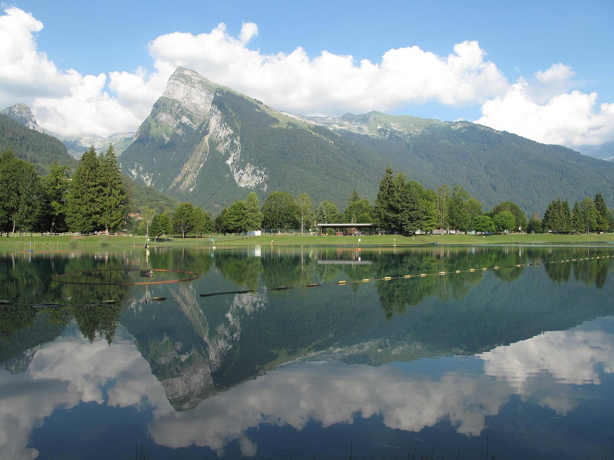
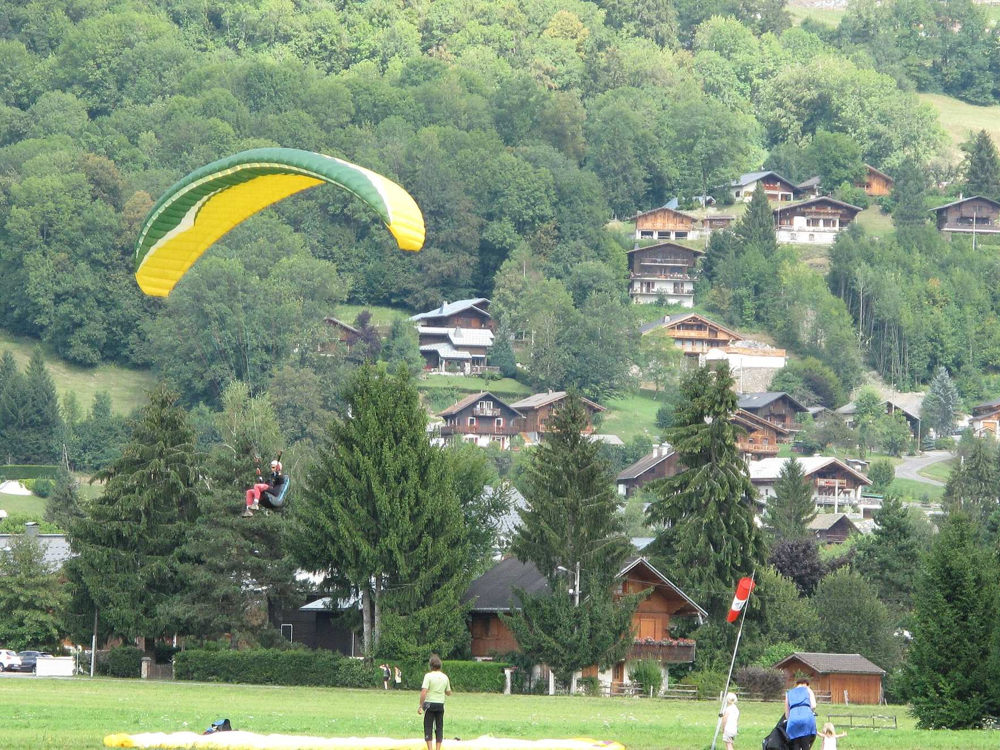
L’eau, l’air et la terre
Canoë-raft, ski nautique, spéléologie, disc-golf : Samoëns réserve de nombreuses surprises aux amateurs de sensations. Pour la montagne douce, direction le Domaine en randonnée, en marche nordique, en trail ou en VTT électrique.
En famille, place à des balades inoubliables, accessibles avec les remontées mécaniques, à la rencontre de la faune et de panoramas fantastiques.
Les activités à voir
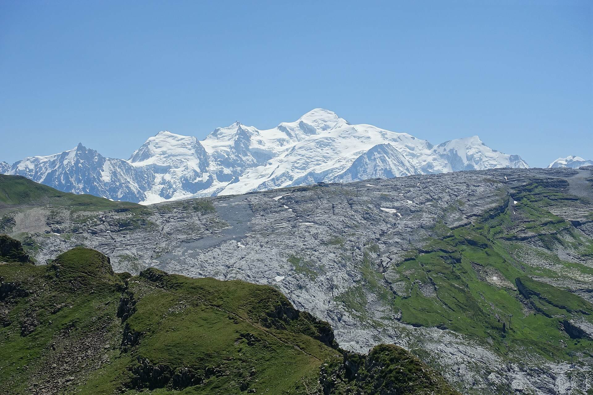
Le Grand Massif
148 pistes face au Mont-BlancLe Gros Tilleul
Sur la place du village, depuis 580 ans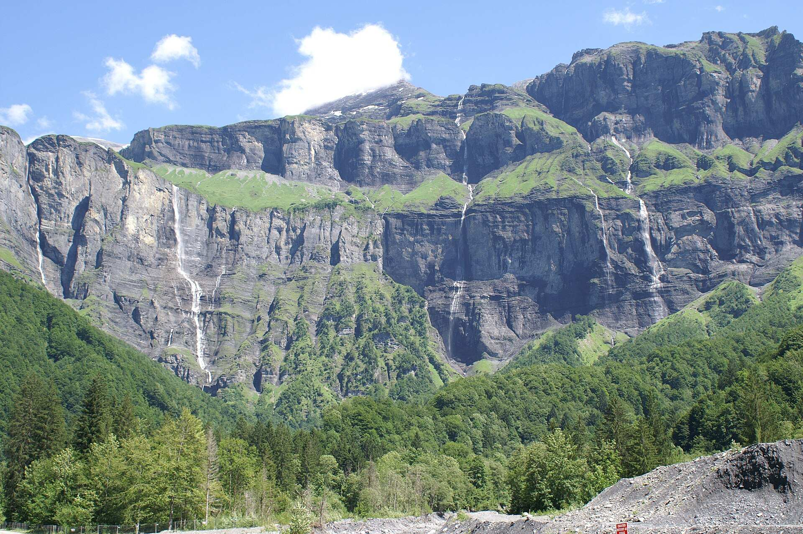
Le cirque du Fer-à-Cheval
Ses falaises et ses cascades, à SixtLe lac aux Dames
Le Criou s’y reflète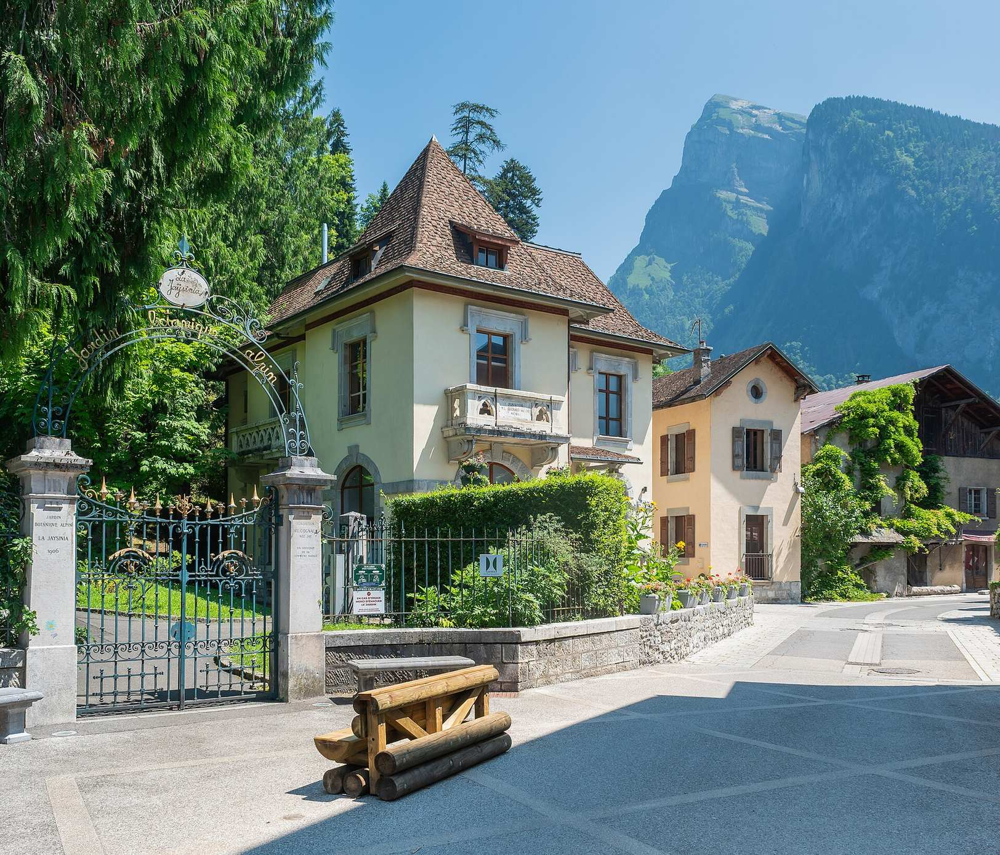
La Jaÿsinia
Le jardin botanique alpin du village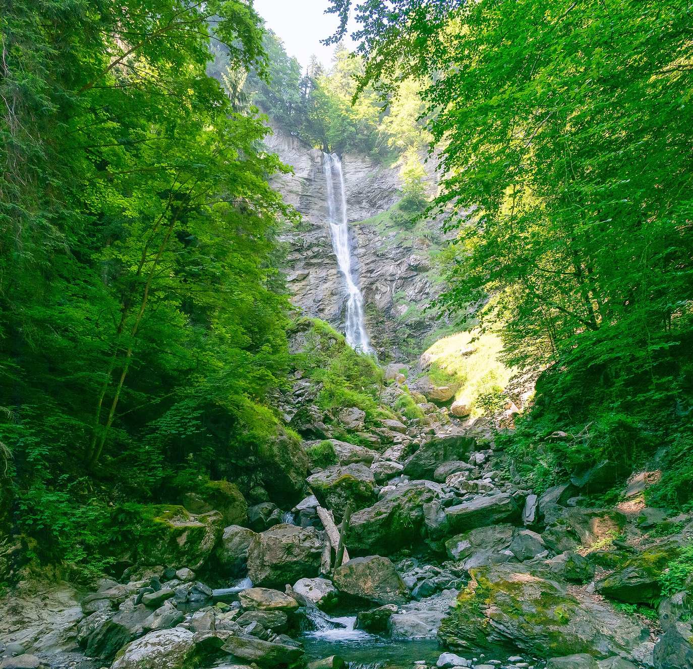
La cascade du Nant d’Ant
Celle qui a donné son nom à une chambreEntre Chamonix et Genève
- En avionà peine une heure depuis l’aéroport de Genève ou d’Annecy
- En voituremoins de 30 minutes depuis la sortie Cluses de l’A40, environ 2 heures depuis Lyon ou Grenoble
- En traingare TGV de Cluses, à 30 minutes en taxi de Samoëns
- Sur placearrêt du Ski-Bus à 50 m du chalet, au pont de Clévieux
- Votre venue organiséedepuis votre lieu d’arrivée ou de départ, sur demande

Le soir, retour au chalet
Après les pistes ou la randonnée, le spa, la cheminée et la grande table vous attendent.